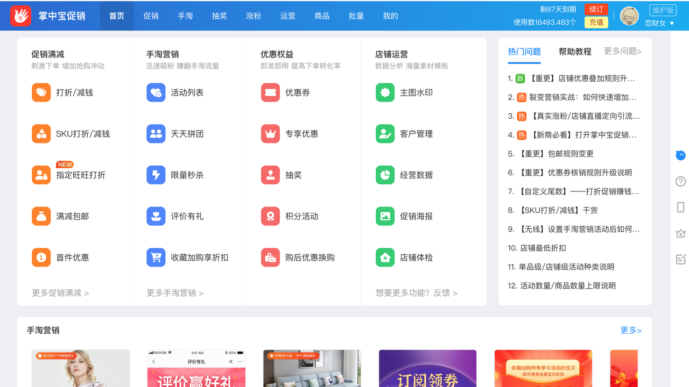
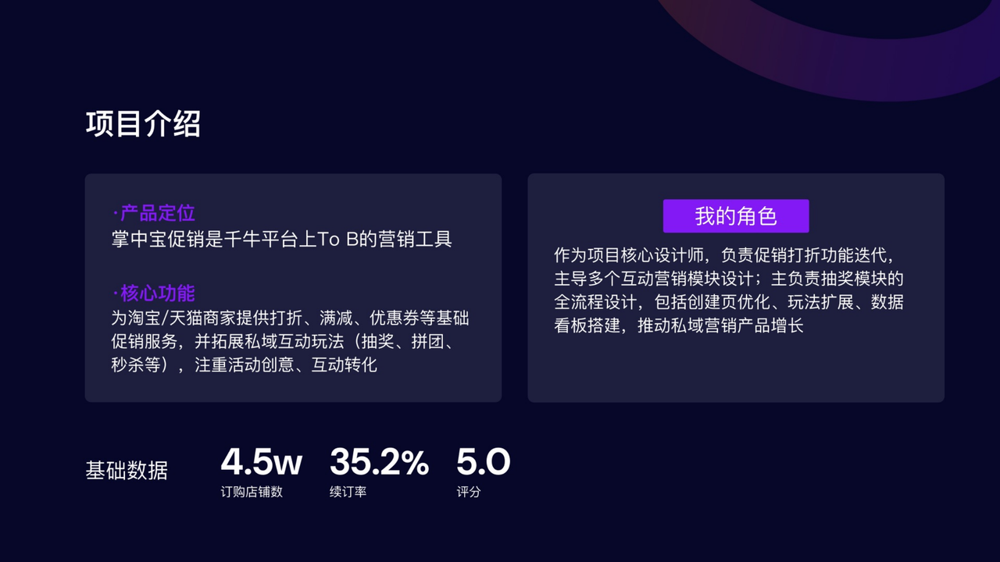
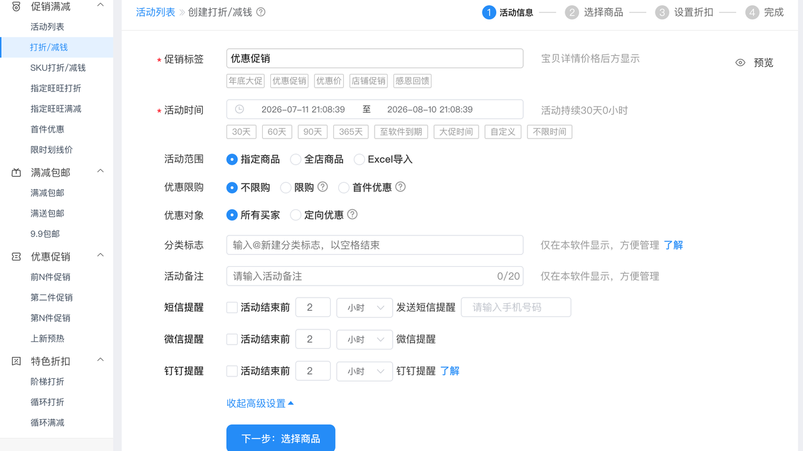
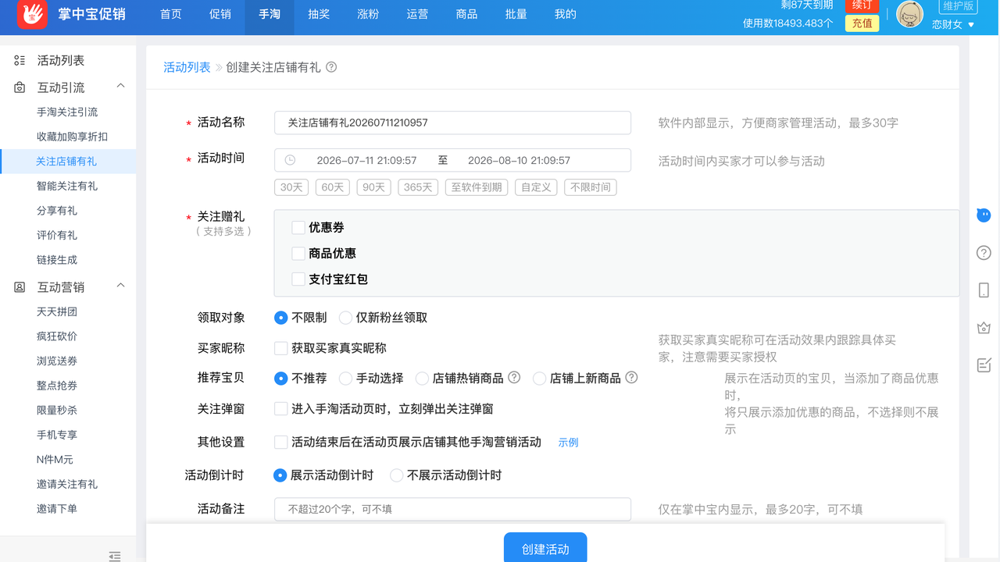
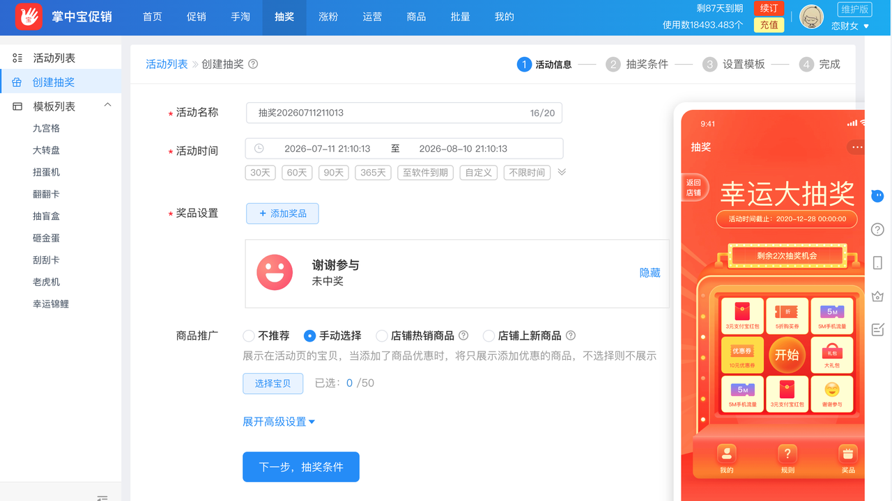
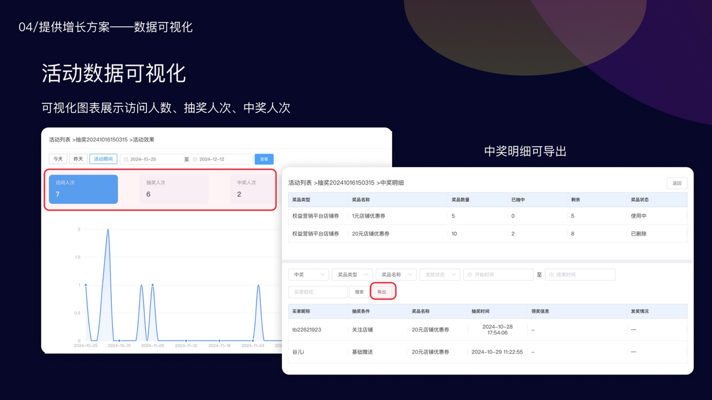
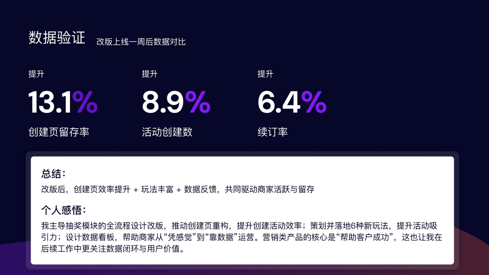

掌中宝促销
以促销配置、手淘互动与活动运营为核心，帮助中小商家更高效地创建营销活动、承接店铺流量，并通过数据反馈持续优化转化效果。
40W+用户
3W+付费用户
45%续费率

以促销配置、手淘互动与活动运营为核心，帮助中小商家更高效地创建营销活动、承接店铺流量，并通过数据反馈持续优化转化效果。

掌中宝促销是一款面向淘宝 / 天猫商家的电商 SaaS 营销工具，覆盖打折、满减、优惠券、关注有礼、收藏加购、抽奖、拼团、秒杀、评价有礼、主图素材、客户管理与经营数据等场景。
项目不只解决“创建一个促销活动”，而是围绕商家从活动配置、流量承接、互动转化到效果复盘的完整链路，推动产品从基础促销工具升级为营销增长工具。
团队产品leader / 体验设计负责人

我将产品能力重新归纳为四个层级：
促销满减等基础能力趋于成熟，产品重点偏向私域营销体系的升级

以“关注店铺有礼”为例，我将单一的赠礼配置，扩展为完整的私域承接链路。
支持优惠券、商品优惠、支付宝红包等多种权益组合，满足不同经营目标。
支持新粉丝限制、领取对象、买家昵称获取等配置，提升活动精细化运营能力。
支持手动选品、热销商品与上新商品推荐，让关注行为进一步连接商品浏览与购买转化。
通过关注弹窗、活动倒计时与其他营销活动推荐，增强活动曝光和后续运营承接。
产品由“送出一份权益”升级为“关注—领礼—浏览—转化”的私域营销链路。

抽奖是我独立负责的重点模块，覆盖产品规划、交互重构、视觉设计与落地推进。
在九宫格、大转盘、扭蛋机基础上，扩展翻翻卡、砸金蛋、抽盲盒、刮刮卡、老虎机、幸运锦鲤等玩法，形成多场景模板体系。
将“先填表单、后选模板”调整为“先浏览效果、再进入创建”，让商家先形成活动预期，再完成配置，降低决策与试错成本。
补充活动效果入口，展示访问人数、抽奖人次、中奖人次等指标，并支持中奖明细导出，帮助商家完成活动核对与复盘。
抽奖模块由单一活动配置页，升级为覆盖“模板选择—活动创建—互动参与—效果复盘”的运营工具。


功能只有被快速理解、顺利创建并持续使用，才能转化为真实业务价值。
让商家先看到结果，再进入配置，比单纯增加说明文字更有效。
统一组件、规则和素材维护方式，不仅改善用户体验，也直接影响研发效率与产品扩展能力。
只有补齐活动效果、参与数据与明细复盘，产品才能形成持续优化的运营闭环。